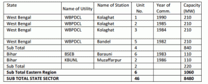
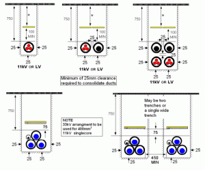

- _______ is used to measure the flow of air around aeroplane
The basic application of Anemometer is to measure the wind velocity (or) flow of air. It is applicable in aero plane, wind mills, etc.
- Relative permittivity can be measured by _______ bridge
The word relative permittivity is associated with the capacitance. Since, the Schering bridge is used to find out the unknown value of capacitance. After finding the capacitance, we can find out the relative permittivity by using the formula [εr = Cx / C0]. Here, C0 is the capacitance of a test capacitor and the Cx is the measured capacitance by Schering bridge.
- There is a ________ between two nodes of signal flow graph
A node can be defined as a connection point between two or more branches. Hence, there should be a branch in between the two nodes of signal flow graph.
- What is the phase difference between two windings of A.C servomotor ?
The two winding AC servo motor is worked by the two phase power supply. Basically, the two phase power supply has 90° phase difference between two phases. Hence, the phase difference between the two windings of AC servo motor is 90°.
- Which of the following logic circuits is the fastest?
Since, the transistors of a standard TTL gate are saturated switches. The minority carrier storage time in each junction limits the switching speed of the device. Variations on the basic TTL design are intended to reduce these effects and improve speed, power consumption, or both.
- Which of the following is not a transmission medium?
Modem means modulator and demodulator. This is used to get the internet connection from the hub. Hence, it does not help to transmit or receive the messages as a transmission medium.
- In a RC phase shift oscillator, the minimum number of R-C networks to be connected in cascade will be
RC phase shift oscillator is used to invert the input for 180° phase difference. The single R-C network gives the 60° phase shift. Hence, we need three set of R-C network which have to be connected in cascade (series). The value of R & C can be chosen by the formula Φ = tan-1 (XC / R).
- A three phase 400 V, 6 pole, 50 Hz, squirrel cage induction motor is running at a slip of 5%. The speed of stator magnetic field with respect to rotor magnetic field and speed of rotor w.r.t stator magnetic field are
: Stator and rotor magnetic field rotates at same speed. So difference in speed is zero. Speed of stator magnetic field is Ns; Ns = 120f / P = 120 × 50 / 6 = 1000 rpm and rotor speed Nr = Ns ( 1 - s ) = 950 rpm. So the rotor w.r.t stator magnetic field is Nr – Ns = 950 - 1000 = - 50 rpm.
- A 400 V, 50 Hz, 30 Hp, three phase IM is drawing 50 A current at 0.8 p.f lagging. The stator and rotor copper losses are 1.5 KW and 900 W respectively. The friction and windage losses are 1050 W and core losses are 1200 W. The air gap power of the motor will be
Line to supply voltage = 400 V, current drawn by motor is 50 A at 0.8 p.f . Input power P = √3 × 400 × 50 × 0.8 = 27.71 kW. We get air gap power by subtracting the losses i.e 27.71 – 1.5 - 1.2 = 25.01 KW.
- What is the rms value of the voltage waveform shown in Figure ?
diagram-for-mcqGet Answer. - A galvanometer with a full scale current of 10 mA has a resistance of 1000 Ω. The multiplying power (the ratio of measured current to galvanometer current) of 100 Ω shunt with this galvanometer is
Rsh = R / ( m - 1 ) ⇒ 100 = 1000 / ( m - 1 ) ⇒ m (multiplying power) = 11.
- Assume that diode D1, D2 in figure are ideal diodes. The value of current is
mcq-diagramCurrent will pass through the simplest path or low resistance path. D1 becomes forward biased and D2 becomes reverse biased. Therefore current I = 0 mA. - India’s largest thermal power station is located at
The plant was officially inaugurated by the then Prime Minister Indira Gandhi on 8th October, 1984. With the total capacity of 3340 MW and this plant is largest thermal power plant in the India. It accounts to more than 25% of total Maharashtra needs.
- Oxide film arrestor has which of the following properties?
The above both properties are essential properties of an oxide film lightning arrestor.
- How many classes of insulating materials are there?
7 insulating material classes are : Y, A, E, B, F, H and C.
- What are insulating materials that can tolerate maximum temperature?
Class C (>180°) insulator consists of mica, porcelain, glass and quartz with / without an inorganic binder.
- The current through the 2 KΩ resistance ( rest resitances are all 1 ohm each ) in the circuit shown in diagram
Bridge is balanced i.e node C and D are at same potential. No current flows through 2 KΩ resistor.
- What is the total installed power capacity (MW) in West Bengal as published by ministry of power in 2011?
This table describes the total installed power capacity in the eastern region. Hence, in WB alone approximately 8200 MW of power capacity is installed
. - What should be the minimum depth (in metre)of cable trench to dug for laying of 1.1 kV?
The below diagram show the length and depth for different level of voltages and different number of cables. Hence, for a 1.1 KV line, the depth range is 750 mm or 0.75 meter. And side space between the wall and cable is 25 mm or 0.025 meter
. - What is the dielectric material used in precision small value capacitor and capacitor used in radio frequency circuits?
Except the vacuum and air, the above all dielectric materials are used in high value capacitors. But, the precision small value capacitor and the capacitor used in radio frequency circuits are required less value of capacitor. So, in those capacitors, vacuum and air are used as a dielectric medium.
{kind=link}
{kind=link}
Design with  by SARU TECH
by SARU TECH
www.sarutech.com
Content Credited to electrical4u.com
Online Electrical Engineering Study Site